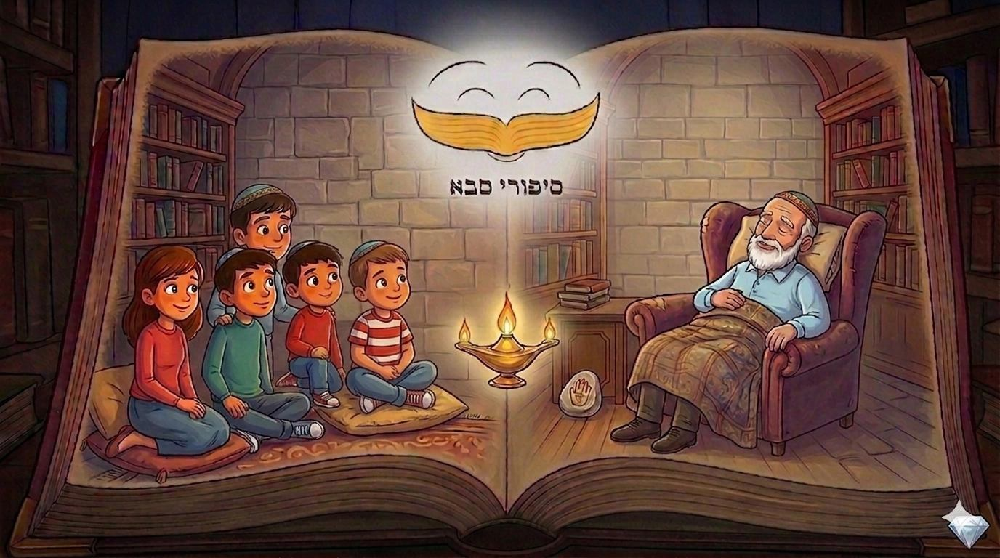

פרשת תולדות
👬 סבא בפרשה: פרשת תולדות ✨ אם שני אחים גדלים באותו בית, עם אותם הורים, הם אמורים להיות דומים, נכון?

סיפורי צדיקים ופרשת השבוע לילדים, עם הרבה ערכים, אמונה וחסד. כמו שסבא מספר.
המיזם מוקדש באהבה ובקדושה לזכרם של ארבעת גיבורי שלומית, אביעד, אוריאל, בכור וראובן ז"ל ולזכר שי שימריז ז"ל, שנפלו בקרבות הגבורה בשמחת תורה תשפ"ד ובמלחמת התקומה. פרויקט "סיפורי סבא" נולד מתוך רצון להרבות טוב, חסד וערכים בעולם, ואת הכוח, הרוח והאור למיזם הזה ובכלל אנחנו שואבים מהגבורה והלב הענק שהם השאירו לנו. יהי זכרם ברוך.
👬 סבא בפרשה: פרשת תולדות ✨ אם שני אחים גדלים באותו בית, עם אותם הורים, הם אמורים להיות דומים, נכון?

🌟 זה לא הדף, זה היומי: מסע לשיעור של הרב אלי סטפנסקי ב-MDY, מרכז הדף היומי ❓ מה עושים כשמפספסים יום לימוד, וכל יום נערם עוד ועוד להשלים?

🌟 הסוד של רבי עקיבא: עקיבא ניחמתנו ❓ האם אפשר לשמוח גם כשמסביבנו קורים דברים עצובים?

🐪 סבא בפרשה: פרשת חיי שרה ✨ איך יודעים אם אדם הוא באמת בעל חסד?

🫗 סיפורי סבא: כשהשמן לא נגמר ✨ האם יש דבר שגדול מדי בשביל הקב״ה?

🗳️ סיפורי סבא: הבחירות האמיתיות ❤️ הבחירות במדינה הסתיימו, אבל האם הבחירות החשובות באמת נגמרות?

❤️ במהלך ביקור בפריז, הרב מרדכי אליהו נתקל בסיפורו של כיסא הקשור לנפוליאון, שאינו עומד למכירה בגלל חשיבותו ההיסטורית לצרפת.

❤️ אחיה מתקשה להבין איך אפשר לסמוך על ילד שעשה מעשה לא יפה.

🌧️ סיפורי סבא: התיבה של הלל הזקן 📖 הילדים בונים תיבה ושואלים את עצמם למה נח היה מוכן להשקיע כל כך הרבה כדי לבנות אותה.

❤️ סיפורי סבא: הרב שלא ויתר על הילד ⚽ אחרי שילד מהשכונה שובר עציץ ומתנהג כאילו לא קרה כלום, הילדים תוהים איך צריך להגיב אליו.

⚔️ סיפורי סבא: נר ישראל 🛡️ אורי עוז רוצה להוכיח שהוא כבר גדול ויכול להסתדר לבד, עד שמשהו קטן משתבש.

🌟 סיפורי סבא: האור שנשאר 🏮 הבוקר שאחרי שמחת תורה מגיע, והבית של משפחת כהן חוזר לשגרה.

🌙 סיפורי סבא: הלילה שלא נגמר 😴 לילה אחד בסוכות, זיו כבר מתכונן ללכת לישון, אבל אז הוא מגלה שפעם, בזמן בית המקדש, היו אנשים שרקדו ושמחו כל…

🌿 סיפורי סבא: הערבות שחסרו 🍃 בחול המועד סוכות יוצאים הילדים עם אבא לחפש ערבות ליד הנחל, ותוהים למה דווקא הענף הפשוט ביותר הוא חלק ממצוות…

🍋 סיפורי סבא: האתרוג שנשבר 🌿 ערב חג הסוכות הגיע, ובבית של סבא עמרם וסבתא אילנה הכול כבר מוכן לחג.

🕯️ סיפורי סבא: ערב יום כיפור 🌙 ערב יום כיפור מגיע לכרם קדוש, ונויה יושבת בחדרה וחושבת על השנה שעברה.

אפשר לתקן 🎨 נויה הכינה ציור יפה, אבל בטעות הציור נפל ונקרע כשזיו עבר ליד השולחן.

הברכה שלא אמרו 🥪 נטע כבר רעב מאוד ורוצה להתחיל לאכול, אבל אחיה מזכיר לו לעצור לרגע ולברך.

🌾 הפרי הראשון 🍎 אחיה חוזר מבית הספר עם תפוח יפהפה שקיבל מהמורה.

🎮 הכול מתחיל במשחק חדש שנטע קיבל.

🎒 סיפורי סבא: מתחילים מחדש 🌅 יום ראשון לשנת הלימודים החדשה הגיע, ובבית משפחת כהן בכרם קדוש ההתרגשות גדולה.

🪙 סיפורי סבא: הזהב שלא היה שווה כלום 🌟 הכול מתחיל במעשה טוב קטן של זיו.

🌾 סיפורי סבא: לחרוש את הלב 🌙 חודש אלול הגיע, ונטע מגלה שטעות קטנה יכולה ללמד שיעור גדול.

📜 השופט הכי קשה ⚽ ויכוח רגיל בין הילדים בכרם קדוש הופך להזדמנות למידה מרתקת: אחיה מציע לעצור ולברר את העובדות במקום לשפוט מיד, ומגלה שרוב…

📜 להסתכל מעבר לזבוב – דוד המלך 🦟 התכתשות קיצית עם זבובים במטבח של משפחת כהן מעלה שאלה גדולה: למה צריך זבובים בעולם אם כל מה שהם עושים זה…

📜 התרגיל שלא נגמר ✏️ אחר צעריים מתוח בבית משפחת כהן: נויה מתקשה לפתור תרגיל מורכב, וכל הניסיונות של האחים לעזור לה רק מגבירים את התסכול…

📜 הניגון שהחזיר את הבת הביתה – חלק ב' 🏰 בחלקו השני של הסיפור, הילדה הקטנה שאבדה ביער מתעוררת בארמון המלך, שם היא מטופלת במסירות ומסרבת…

🌲 סביב שולחן השבת, משפחת כהן שואלת איך אפשר להרגיש תקווה ושמחה כשקורים דברים קשים ומפחידים. סבא חיים לוקח אותם אל תקופת גזרות ת"ח ות"ט החשוכה, אל סיפורו המדהים של רבי שבתי הכהן (הש"ך) שנמלט עם בתו הקטנה אל היער המושלג. שבת בתוך קור וסכנה, פחד עצום, ורגע מטלטל שבו הילדה נעלמת באפלולית – וכרכרה מלכותית שאוספת אותה אל ארמון המלך. חלק ראשון של מסע מרגש על השגחה פרטית ואמונה שאינה נשברת.

📜 פרק 17 – האר"י הקדוש: "בואי כלה" ✨ ערב שבת בבית משפחת כהן מלווה בלחץ, צעקות ו"עוד חמש דקות" אחרונות. סבא חיים לוקח אותם למסע קסום אל סמטאות צפת העתיקה יחד עם האר"י הקדוש ותלמידיו, כדי לגלות איך מקבלים את שבת המלכה מתוך הלב ומאהבה אמיתית. סיפור מרגש ומרומם על קבלת שבת והכנה פנימית שמשנה את הכל.

🚌 כל כרם קדוש יוצא לטיול ענק לצפון – מעיינות, משחקים, לינה בחאן והרבה צחוקים! אבל הטיול הופך למסע מרתק בעקבות מפתח ישן, מפה סודית ואוצר מסתורי. סיפור מיוחד, מצחיק ומרגש על כוחה של קהילה, עזרה הדדית, ועל האוצר האמיתי שנמצא ממש קרוב ללב של כולנו.

🕯️ ביום תשעה באב, משפחת כהן שואלת את עצמה שאלות גדולות על חורבן בית המקדש והגעגוע אליו. סבא חיים לוקח אותם למסע מטלטל אל העיר בית"ר בתקופת מרד בר כוכבא, שם הם פוגשים לוחמים אמיצים ואת רבי אלעזר המודעי, ששמר על העיר בתפילותיו. סיפור עוצמתי על כוחה של תפילה, רגעים קריטיים של חשד, והדרך שבה נבנה את העתיד מחדש באהבת חינם.

🌊 בעקבות שיחה על תרומה לבית הכנסת, משפחת כהן פוגשת את סיפורו המדהים של רבי יצחק, אביו של רש"י הקדוש. רבי יצחק מצא מרגלית יקרה מאין כמוה, אך בחר להשליך אותה אל מעמקי הים כדי שלא להיכנע לכסף או לעבודה זרה. מסע מרגש על ויתור עצום, אמונה טהורה והאור הרוחני שנולד מתוך מסירות נפש.

🍕 ארוחת פיצה משפחתית הופכת לשיעור מאלף על ביטחון בהשם. סבא חיים לוקח את הילדים למסע מרגש אל ביתו של רבי זושא מאניפולי, שם הם מגלים את הכוח המופלא של תפילה פשוטה ואמונה תמימה. סיפור מתוק על איך ה' דואג לכל צרכינו, לפעמים בדרכים הכי מפתיעות שיש.

📝 משפחת כהן מתחילה לכתוב יומן מסע, אבל מהר מאוד מתפתח ויכוח: האם כותבים רק את ההצלחות או גם את הטעויות? סבא חיים לוקח אותם למסע מרגש אל ספר דברים, שם הם לומדים ממשה רבנו למה דווקא הטעויות הן חלק בלתי נפרד מהדרך שלנו להפוך לאנשים טובים יותר. סיפור מרגש על אומץ, למידה והדרך שבה אנחנו מתקדמים בחיים.

💎 בפרק המרגש של היום אנחנו לומדים יחד עם משפחת כהן שיעור עוצמתי על כבוד הורים. כשאבא עייף וזקוק למנוחה, הילדים מגלים שהשקט שלהם הוא אוצר אמיתי. יחד עם סבא חיים, נחזור אחורה בזמן אל דמה בן נתינה, שויתר על הון עתק רק כדי לא להעיר את אביו הישן. סיפור מופלא על זכות גדולה שמתחילה במעשה קטן של התחשבות.

🌟 מה עושים כשמילים פוגעות יוצאות מהפה? אחיה פוגע בטעות בזיו ומגלה יחד עם משפחת כהן שיעור לכל החיים. סבא חיים לוקח אותם למסע מרגש אל סיפורו המפורסם של החפץ חיים, שמלמד אותנו איך מילים דומות לנוצות ברוח. סיפור עוצמתי על כוח הדיבור, אחריות אישית והיכולת לתקן דרך מילים טובות.

✨ נויה ואורי עוז מגלים שיעור חשוב על עזרה הדדית ואחדות משפחתית לאחר ויכוח קטן בבית. יחד עם סבא חיים הם יוצאים למסע בזמן אל המדבר שם הם לומדים מבני גד ובני ראובן מהו כוחם של חלוצים שצועדים בראש המחנה כדי לסייע לכל אחד ואחד. סיפור מרגש על אהבה שותפות ואחריות משפחתית לכבוד שבת המלכה.

מה עושים כשצמאים למים וכולם סביבנו מיואשים? בפרק המיוחד הזה, משפחת כהן יוצאת ליום כיף שמתפתח למסע מופלא אל ימי בית המקדש. יחד נכיר את נקדימון בן גוריון, עשיר בעל לב ענק ואמונה עצומה, שזכה לחולל נס גלוי ולגרום לשמש לעצור בשמיים. סיפור על כוחה של תפילה, אמונה בבורא עולם ונתינה אינסופית.

פרק 12 – משלוח המנות של זיו: הסוד לניצחון על הכעס 🎁✨ מה עושים כשחבר מעליב אותנו רגע לפני החג? זיו כל כך כועס שהוא מסרב להכין משלוח מנות לחנוך מהשכונה. בפרק המיוחד הזה, הספר העתיק של סבא חיים לוקח אותנו אל סיפור מרגש על הצדיק ה"חתם סופר", ומגלה לזיו ולכולנו איך מנצחים את הפירוד, מוותרים מהלב והופכים כעס גדול לשלום מתוק של פורים. הצטרפו למסע של אחדות ואהבת ישראל! ❤️

למה בעצם אנחנו צמים ביום קיץ חם? ☀️ משפחת כהן יוצאת למסע מרתק ומרגש בזמן אל תוך ירושלים העתיקה. הספר של סבא חיים לוקח אותנו היישר אל הסעודה המפורסמת של קמצא ובר קמצא, כדי לגלות את הסוד הכי גדול: החומות של ירושלים לא נשברו בגלל האויב מבחוץ, אלא בגלל שהלבבות בפנים היו רחוקים. 🤝✨ פרק עוצמתי על כוחה של סליחה, ויתור ואהבת חינם שיכולה לבנות את הכל מחדש! ❤️

האם להבה קטנה יכולה לנצח חושך גדול? משפחת כהן עוצרת את ההכנות לחנוכה למסע מרגש אל גיבורי המכבים, אל כד שמן קטן ואל הניצחון האמיתי – זה שקורה בתוך הלב. סיפור עוצמתי על גבורה, אמונה ואור שלא נגמר. הצטרפו אלינו לחוויה משפחתית שתדליק לכם את הנשמה! 🕯️❤️

מה עושים כשמנסים לעצור אתכם מלעשות את מה שאתם מאמינים בו? בפרק המיוחד הזה, סבא חיים מספר על הרבי הריי"צ – מנהיג אמיץ שלא פחד מאף אחד ושמר על האמונה בלב העם, גם בתקופות הכי חשוכות. בואו לגלות איך מסירות נפש קטנה הופכת לאור גדול שממשיך להאיר עד היום! 📖✨

בסלון משפחת כהן, אחיה מנסה לספר על שביל נמלים מרתק בחצר, אבל האחים הגדולים שלו עסוקים מדי בעצמם מכדי להקשיב. 🛑 כשהמתח גובר, סבא חיים מגיע עם הספר המסתורי ופותח פתח לעולם עתיק ומרתק – סיפורו של הנביא בלעם ומלך מואב בלק. 👑

מריבה סוערת בסלון על "המקום הטוב ביותר" מול המסך מוציאה את משפחת כהן לבית המדרש של סבא חיים. 📺 הפעם, הספר העתיק לוקח אותנו היישר לארמונו של המלך שלמה, כדי לגלות איך חוכמה אמיתית ויכולת לוותר יכולות לפתור כל קונפליקט. 🤝 האם נויה ואורי עוז יצליחו ללמוד מהמלך החכם ולעשות שלום? הצטרפו למסע מרגש של שיעור לחיים! ✨

האם צדיק יכול להיכלא בגלל אמת? 🕯️✨ בואו לגלות איך נגמר המסע המטלטל של ה"אור החיים הקדוש" ומה קרה כשהשמיים רעדו! פרק מרגש עם סבא חיים.

הסוד של הפרה האדומה: למה לעשות "בערך" זה לא מספיק? 🐄✨ הצטרפו למשפחת כהן למסע אל שדה סודי, שבו נגלה איך הפרטים הקטנים הופכים כל משימה למצווה ענקית!

הכירו את "אור החיים הקדוש"! 🕯️✨ איך צדיק אחד הפך לסמל של אהבת ישראל ומה קרה כשמלאך הופיע לו בחלום? הצטרפו למסע מרגש עם סבא חיים – פרק ראשון!

מה עושים כשכולם צודקים?! בפרק המקסים הזה, משפחת כהן לומדת איך להפוך ויכוח משפחתי לפתרון מתוק במיוחד בעזרת "התפוח של שלום"! 🍎✨ בואו לגלות איתנו את סוד הקסם שמחבר לבבות.

כשבוויכוח בכולל הערב פורצות צעקות, הילדים יוצאים עם סבא חיים למסע בזמן כדי להבין את ההבדל בין מחלוקת ששורפת לבין מחלוקת שבונה. מה קורח רצה באמת? ואיך הלל ושמאי ידעו להתווכח באהבה? גלו בפרק המרתק של השבוע.

🌟 מה הסוד של עזרא הסופר כשהסכנה מתקרבת? 🛡️ 🤝 איך התפילה והחיילים שלנו הולכים יד ביד כדי לשמור עלינו? 🇮🇱❤️ 🏗️ ומה הופך בית רגיל לבית עם לב? 🏠✨ אל תפספסו את סוף הפרק! הספר של סבא חיים מתחיל לרעוד, וציור של בוסתן קסום עם תפוח סודי שמתחיל לדבר מזמין אותנו להרפתקה הבאה... 🍎🌳🤫 פרק מרגש על מנהיגות, אמונה והרפתקה משפחתית בלתי נשכחת! 💖🎉📖

הרגע הגדול הגיע! בלב בית הכנסת בברדיצ'ב, מול קצין זועף שמנסה להפסיק את התפילה, האחים כהן מגלים את הכוח המופלא של התפילה להפוך לניצוצות של זהב. האם הם יצליחו להבין שהסידור הוא לא ספר, אלא גשר של אור?

נויה עומדת במבחן אומץ – האם להצטרף לדיבורים שליליים או לבחור באמת? האחים כהן יוצאים למדבר ופוגשים את יהושע וכלב שמלמדים אותם איך לראות את הטוב גם כשהמציאות נראית מאתגרת.

איך הופכים את מילות התפילה היבשות לכנפיים שמגיעות ישירות לכתובת הנכונה

הילדים לומדים שגם מול הסערות הכי חזקות, מי שלא מוותר וממשיך להאמין – בסוף זוכה לראות את האור.

אורי עוז ונועם מתלבטים איך לגשת לתלמיד חדש ובודד בכיתה. הם יוצאים למסע בזמן אל המשכן במדבר ופוגשים את אהרן הכהן, שמלמד אותם שמי שרוצה להאיר – צריך לצאת אל האחר.

נויה הכינה תיק, מצלמה והמון ציפיות לטיול הגדול... אבל אז הגיע מבול של גשם וטרף לה את כל הקלפים! ⛈️😔 לאחר מפגש עם רבי עקיבא עם החמור הנר והתרנגול היא תלמד שיעור חשוב. מוכנים לגלות מה קרה כשהשמש עלתה על המדבר?

מה קורה כשרועה צאן צעיר מגיע לירושלים ומבקש להקריב קרבן נזיר? בפרק השבוע, האחים כהן צוללים לתוך פרשת נשא, פוגשים את שמעון הצדיק המפורסם, וחושפים את הסיפור המרתק על המלחמה ביצר הרע ועל הכוח העצום שיש בהחלטה אחת קטנה לכבוד ה'. מסע מרגש ומלא בערכים על ניצחון עצמי שמשנה את הלב!

הילדים מתמודדים עם כעס וחוסר סבלנות, פוגשים את הלל הזקן, ולומדים עד כמה סבלנות ורוגע יכולים לשנות הכול.

כשהעייפות של ליל שבועות מכריעה את האחים, הספר המסתורי שואב אותם אל תוך חדר האוצרות הסודי של המלך ומגלה להם איך כל פסוק ומאמץ קטן הופכים ליהלום נצחי בנשמה! 💎👑

הילדים מגלים את הספר המיוחד של סבא חיים, פוגשים את רבי חנינא בן דוסא, ולומדים מהי אמונה אמיתית וביטחון בה’.

האחים נשאבים בזמן אל רגע הכרזת המדינה בה' באייר תש"ח, פוגשים את דוד בן גוריון ומגלים איך הופכים פחד לאומץ ואת הנס הענק שנקרא מדינת ישראל!

כשכולם רבים מי יעמוד בראש השיירה, האחים נשאבים ללב המדבר בין שבטי ישראל ומגלים את הסוד של דגל שבט דן – ואיך כל אחד מאיתנו הוא כלי נגינה ייחודי בתזמורת של ה'! 🚩🏜️

בעקבות רוכל משונה שמכריז על "תרופת פלא" בשוק עתיק, האחים נשאבים לתוך הספר ומגלים את הסוד המטורף של כוח הדיבור – ואיך מילה אחת יכולה ליצור אור או כתם מפחיד! 🧪🗣️

כששערי השמיים נשארים נעולים ביום הכיפורים, האחים נשאבים לתוך הספר המסתורי ומגלים איך שריקה אחת פשוטה של נער כפרי עומדת לשבור את כל החומות! 🌾🎺
לא נמצאו פרקים